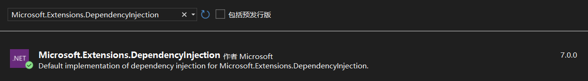
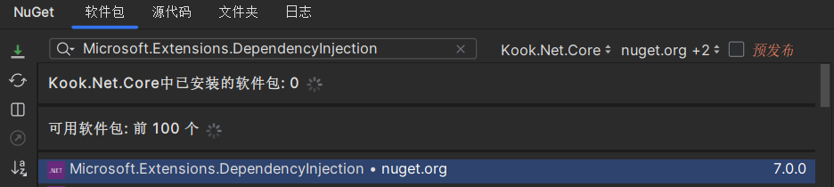

依赖注入
依赖注入并不是 Discord.Net 中必要的功能，但它可以让框架的使用更为简便。与许多其他库相结合使用，可以更好地控制应用程序。
按照
依赖注入不是 .NET 的原生功能。您需要将扩展包安装到项目中才能使用它：
Warning
仅下载 Abstractions 包不包含使用依赖注入所需的一些必要类，请确保同时安装两个包，或选择仅安装 Microsoft.Extensions.DependencyInjection 包来隐式同时安装两个包。
Visual Studio

程序包管理控制台
PM> Install-Package Microsoft.Extensions.DependencyInjection.
Rider

命令行
dotnet add package Microsoft.Extensions.DependencyInjection
Tip
ASP.NET 已经在其框架中包含了所有必要的程序集，要在 ASP.NET 中使用依赖注入完整功能，不需要安装任何额外的 NuGet 包。
开始
首先，您需要创建一个基于依赖注入的应用程序，这样就可以在整个项目中访问并注入它们。
public class Program
{
private readonly IServiceProvider _serviceProvider;
public Program()
{
_serviceProvider = CreateProvider();
}
static void Main(string[] args)
=> new Program().RunAsync(args).GetAwaiter().GetResult();
static IServiceProvider CreateProvider()
{
var collection = new ServiceCollection();
//...
return collection.BuildServiceProvider();
}
async Task RunAsync(string[] args)
{
//...
}
}
要在不同的类中自由传递依赖项，您需要将它们注册到新的 ServiceCollection 中，并将它们构建到 IServiceProvider 中，如上所示。
然后需要通过启动文件访问 IServiceProvider，以便您可以访问您的提供程序并对其进行管理。
static IServiceProvider CreateServices()
{
var config = new KookSocketConfig()
{
//...
};
var collection = new ServiceCollection()
.AddSingleton(config)
.AddSingleton<KookSocketClient>();
return collection.BuildServiceProvider();
}
如上所示，这里创建了一个 KookSocketConfig 的实例，并在添加客户端本身之前将其添加到了服务容器中。
服务容器会优先选择已经存在的服务来填充构造函数，且你已经将配置类注册到服务容器中，因此，带有配置参数的构造函数重载会被优先调用。
使用依赖项
在 Program 类的构造函数中构建服务容器提供程序后，现在可以在您正在使用的实例中使用它了。 通过提供程序，我们可以请求我们之前所注册的 KookSocketClient。
async Task RunAsync(string[] args)
{
// 从客户端请求实例。
// 我们在这里首先请求它，因此其目标构造函数将会调用，我们会得到一个客户端的实例。
var client = _services.GetRequiredService<KookSocketClient>();
client.Log += async (msg) =>
{
await Task.CompletedTask;
Console.WriteLine(msg);
}
await client.LoginAsync(TokenType.Bot, "");
await client.StartAsync();
await Task.Delay(Timeout.Infinite);
}
Warning
服务实例的构造函数在被首次请求之前不会被调用。要想实例化服务容器里的服务，需要先从提供程序中请求服务。 如果所请求的服务有依赖项，那么在实例化服务本身之前，其未被实例化的依赖项会被实例化。
注入依赖项
您不仅可以直接从字段或属性中访问提供程序，还可以将实例传递给在提供程序中注册的类。有多种方法可以实现这一点。请参考 注入实例 了解更多信息。